Late – 2024
Late is a collaborative project produced for the dataplay workshop . It associates design and code .
Have you ever been late because of the train ? With this website, you can discover how much time you spend waiting for your train and the different reasons of the delay . In order to keep you occupied during your waiting, you also can play a snake game . I did the illustrations of the website and the animation of the background .
Visit websiteNext Project – After Yang
Discover 
